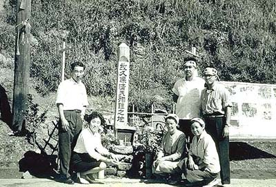
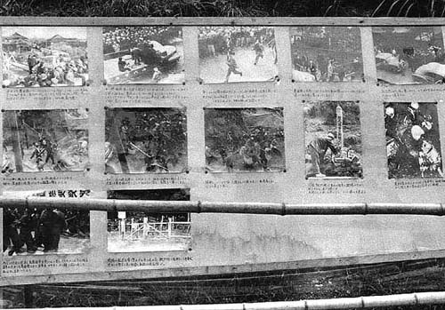
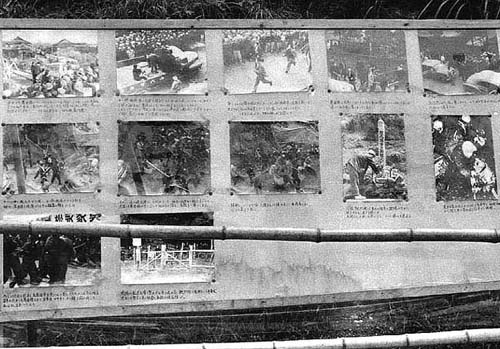

（提供写真） 昭和35年4月5日、故久保清氏慰霊合同葬。大牟田市民会館から笹林公園まで行進が続いた。  故久保清さん殉難乃碑 三池労組四山支部組合員久保清さんの殉難の地ー四山鉱正門前。三池闘争終了後、この碑 は撤去され、ここから約50メートル離れた場所に新たな碑が久保さん一周忌のとき建てられた。 しかし、それもまた、2005年4月10日の三池労組解散に備えて2004年10月熊本県荒尾市に移設された。  故久保清君殉難乃碑と共に掲示されていた写真掲示板（提供写真）
昭和35年4月5日、故久保清氏慰霊合同葬。大牟田市民会館から笹林公園まで行進が続いた。
故久保清さん殉難乃碑 三池労組四山支部組合員久保清さんの殉難の地ー四山鉱正門前。三池闘争終了後、この碑 は撤去され、ここから約50メートル離れた場所に新たな碑が久保さん一周忌のとき建てられた。 しかし、それもまた、2005年4月10日の三池労組解散に備えて2004年10月熊本県荒尾市に移設された。  故久保清君殉難乃碑と共に掲示されていた写真掲示板（提供写真）
三池労組四山支部組合員久保清さんの殉難の地ー四山鉱正門前。三池闘争終了後、この碑 は撤去され、ここから約50メートル離れた場所に新たな碑が久保さん一周忌のとき建てられた。 しかし、それもまた、2005年4月10日の三池労組解散に備えて2004年10月熊本県荒尾市に移設された。
故久保清君殉難乃碑と共に掲示されていた写真掲示板（提供写真）